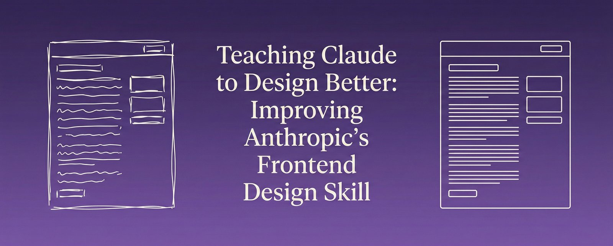
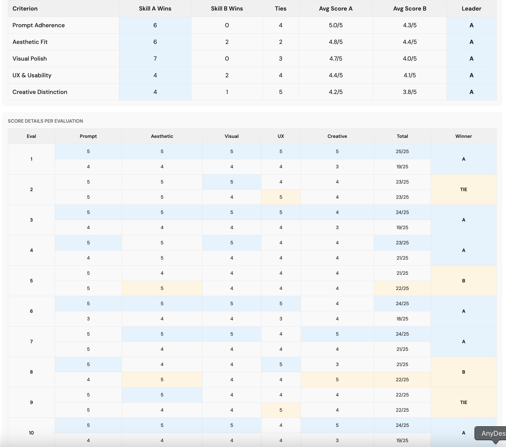
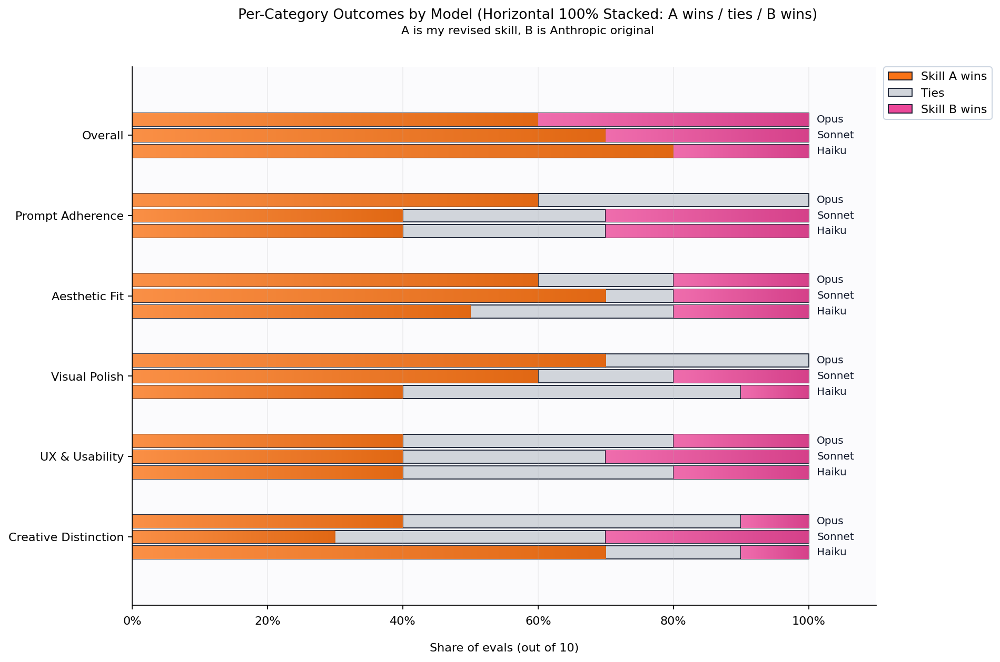

中文全文译文：由「译文工坊」根据英文原文自动翻译生成，供学习参考。结构与措辞以译文为准；想看原始论述，请点上方「阅读原文」。
上个月我为 Anthropic 的 Bloom 框架做了一个 GUI（最近还提出了十种它可以测试的新行为），之后我想更深入地了解他们的生态。Bloom 项目让我对 Anthropic 处理工具和评测的方式很敬佩，也让我好奇他们还开源了什么。

作者：Justin Wetch
ANTHROPIC 默认前端 SKILL
重写后的前端 SKILL
查看 PR（拉取请求）
上个月我为 Anthropic 的 Bloom 框架做了一个 GUI（最近还提出了十种它可以测试的新行为），之后我想更深入地了解他们的生态。Bloom 项目让我对 Anthropic 处理工具和评测的方式很敬佩，也让我好奇他们还开源了什么。
就在那时，我发现了他们的 Skills 仓库。
什么是 Skills？
Skills 本质上是一种专门的系统提示词，赋予 Claude 特定领域的能力。有用于创建 Word 文档的 skill，有用于电子表格的，有用于 PDF 的，还有一个引起了我的注意：前端设计 skill。这个 skill 旨在帮助 Claude 生成有辨识度、达到生产级水准的网页界面，避免千篇一律的“AI 垃圾”审美。
我开始通读它，几乎立刻就发现了一个问题。
“不要在多次生成之间趋同”的问题
原始 skill 文件中有这样一句指令：“NEVER converge on common choices (Space Grotesk, for example) across generations.”（绝不要在多次生成之间趋向常见选择，例如 Space Grotesk。）几行之前，还写着“No design should be the same.”（没有任何两个设计应该相同。）
意图很明确。作者希望 Claude 避免落入重复的套路，不要每次有人要网站时都去选同样保险的字体和布局。这确实是个值得解决的问题。
但这里有个症结：Claude 看不到它的其他次生成。每次对话都是完全隔离的。Claude 不记得自己给上一位用户、或者再上一位用户生成过什么。要求它“不要在多次生成之间趋同”或“没有任何两个设计应该相同”，就像要求一个人不要重复自己梦话里说过的话。他们根本无从获取那些信息。
这类现象让我着迷，因为它揭示了我们直觉上如何看待 AI 与这些系统实际运作方式之间的落差。我们很自然地将其拟人化，把 Claude 想象成一个持续存在、积累了各种习惯的单一实体。但从 Claude 的视角看，每一次对话都是第一次对话。
模型心智理论
我之前写过所谓的元认知脚手架（metacognitive scaffolding），即通过为模型提供结构化的思考框架，可以大幅提升其输出质量。但写好脚手架有一个前提：你必须了解模型究竟能知道什么。
这就是模型心智理论（model theory of mind）。它指的是去推理模型的认知状态：它能获取哪些信息、能感知什么、能记住什么，以及它如何处理指令。缺少这一步，你写出的提示词读起来对人类很顺耳，对模型却可能让人困惑或无从执行。
"don't converge"（不要趋同）这条指令就是一个绝佳的示例。它出发点是好的，却无法执行。更好的表述或许是："Never settle on the first common choice that comes to mind. If a font, color, or layout feels like an obvious solution, deliberately explore alternatives."（不要满足于脑海中浮现的第一个常见选择。如果某种字体、颜色或布局看起来是显而易见的方案，就有意去探索其他可能。）
目标不变，但现在这是 Claude 在单次生成中真正能够做到的事。
从第一性原理出发
注意到这个问题后，我好奇还有哪些地方可以改进。我决定先梳理自己的想法，写了一份 1800 字的文档，记录我对前端设计的全部认知：什么让界面与众不同，如何思考排版、色彩和动效，以及是什么将令人难忘的作品与转瞬即忘的作品区分开来。这份文档成了我的参照点，确保我是在一个自洽的基础上构建，而不只是对原有 skill 做出反应。
然后我逐行审视了现有的 skill，不断自问：这句话清晰吗？可执行吗？Claude 是否拥有遵循这条指令所需的信息？它与文档其余部分在逻辑上自洽吗？它是否契合周围文字的语气与意图？
我认为这个 skill 整体上还有相当大的改进空间，但我想先做一个有针对性修改的版本，因为相比从头重写，它被真正合并的可能性要大得多。
具体修改
这些改动大致分为几类。
清晰与连贯。除了“在多次生成中趋于雷同”的问题，还有一些地方措辞含糊，或者 skill 自相矛盾。有一节在选择美学方向时写的是“选一个极端”，后面却又提醒“关键在于有意为之，而非强度”。这两条指令互相冲突。我把前一句改成“确定一个鲜明的方向”，既保留了原意，又消除了矛盾。同样，“设计一个忠于美学方向的作品”改成了“最终的设计应当独一无二，每个细节都服务于同一个统一的方向”。更具体，也更可执行。
祈使语气。原版 skill 的指令语气混杂。有些部分简短有力、直截了当（“出人意料的布局。不对称。重叠。”），另一些则含混模糊，让人不太清楚到底要 Claude 做什么。我统一了语气：用明确的命令告诉 Claude 该做什么，而不只是该考虑什么。
拓展潜空间。skill 里列出了“极致极简”和“极繁混乱”之类的美学方向，但整片整片的领域都缺失了：暗黑、情绪化的美学，手工、匠人质感，lo-fi 独立杂志（zine）的能量。我扩充这份清单并不是为了穷尽所有风格，而是为了让 Claude 获得向更多方向探索的权限。
NEVER/INSTEAD 结构。原版有一段讲不该做什么（通用字体、陈词滥调的配色、可预测的布局），却没有配上正面的替代方案。我加了一个 INSTEAD 部分：“有辨识度的字体。大胆、笃定的配色。出人意料的布局。量身定制的细节。每个选择都植根于丰富的上下文。”现在 Claude 既知道该避开什么，也知道该追求什么。
排版大改。这一部分需要下的功夫最多。原版用了“美观、独特、有趣”这类形容词，读起来顺耳，却没有真正告诉模型该怎么做。谁眼中的美观？和什么相比算独特？这些都是审美判断，而不是可执行的指令。新版本聚焦于具体的指导：默认字体意味着默认思维，排版承载着设计独一无二的声音，展示字体应富有表现力，正文字体则应易读，并且要充分运用整个排版范围（字号、字重、大小写、间距）来建立层级。
大胆用色。原先关于色彩的指引很含糊，只让 Claude “确立统一的美学风格”，却没说明这意味着什么。我把它改写成了几个具体方向供 Claude 参考：大胆饱和、沉稳克制，或高对比极简。以一种主色调为主导，再用鲜明的强调色点缀。这不只是为了让 Claude 更有底气，而是要拓宽可能性空间，让它知道有哪些选项。
从凭感觉到看数据
我先手动测试了修改后的 skill 一段时间：用相同的提示词分别跑两个版本，再对比输出。我个人觉得结果更好，但“感觉更好”并不是能提交到代码仓库的贡献。如果真想提 PR（拉取请求），我就需要数据。
于是我搭建了一套评测系统。
整体设置如下：准备一个包含 50 条代表性提示词的题库，覆盖不同的设计上下文（落地页、仪表盘、作品集、菜单、注册流程、乐队页面等）。每轮评测随机抽取提示词，通过 API 各执行两次，一次使用原版 skill，一次使用修订版 skill。再由 Puppeteer 服务器对两份输出分别截取整页截图。
接下来是打分。用户的提示词和两张截图（匿名标为 A 和 B）会一起发送给 Claude Opus 4.5，由它按五项标准分别打分：提示词遵循度、美学契合度、视觉精致度与一致性、用户体验与可用性，以及创意独特性。评委并不知道哪份输出出自哪个 skill。
我在 Claude 4.5 系列模型上分别运行了独立的评测套件。
结果
Haiku 4.5：修订版 skill 在 10 次评测中赢了 8 次。提升最明显的是创意独特性（7 胜 2 平 1 负）和视觉精致度（4 胜 5 平 1 负）。
Sonnet 4.5：10 次赢了 7 次。美学契合度的提升最为明显（7 胜 1 平 2 负），视觉精致度紧随其后（6 胜 2 平 2 负）。
Opus 4.5：10 次赢了 6 次。提示词遵循度（6 胜 4 平 0 负）和视觉精致度（7 胜 3 平 0 负）表现突出。
在三个模型层级中，修订版 skill 在 28 次有明确胜负的对比（不含平局）中赢了 21 次，胜率 75%。精确二项检验证实这一结果具有统计显著性（单侧 p = 0.0063，双侧 p = 0.0125），也就是说，我们可以确信这一提升并非噪声。
Opus、Sonnet 和 Haiku 共计 30 次评测
一个有趣的规律
有件事出乎我的意料：修订后的 skill 对小模型的帮助比对大模型更大。Haiku 的提升最明显，Sonnet 居中，Opus 受益最少。
我的假设是，这反映了一种天花板效应。即使指令不那么具体，Opus 在前端设计上本来就已经相当出色。当提示词含糊不清时，它有更强的能力去补全空白、推断意图并做出合理的选择。而 Haiku 的原始能力较弱，从明确的指引中获益更多。指令越清晰、越可执行，对那些无法自行弥补的模型帮助就越大。
如果这个判断成立，对提示词工程整体来说就有一些有意思的启示：模型越强，你的提示词就越不重要，至少在它能力范围内的任务上是这样。但对于更小、更快、更便宜的模型，精心设计提示词可以弥合相当一部分能力差距。
结语
我已经把修订后的 skill 作为 PR（拉取请求）提交到了 Anthropic 的仓库。无论最终是否被合并，这个过程本身都很有价值。
这类工作有一种深深的满足感：拆解一份系统提示词，理解它的意图，找出它表达不清的地方，再以更高的精度把它重建起来。这需要一种特别的同理心，不是对用户，而是对模型。你得在脑中时刻装着：Claude 能知道什么、不能知道什么，能遵循什么样的指令、不能遵循什么样的指令，以及它理解语言的方式与人类理解同样文字的方式有何不同。
我是真心喜欢这类问题。清晰的沟通、设计思维与模型认知的交汇处，正是我想投入时间的地方。如果你也在处理类似的挑战，我很乐意听听。
感谢 Anthropic 开源了他们的 Skills 仓库，也感谢他们为提升 Claude 的能力所做的用心工作。能参与贡献，哪怕只是微小的一份，也是一种荣幸。
关于上文提到的 Bloom GUI 项目，详见：Building a GUI for Anthropic's Bloom
关于我想为 Bloom 新增的十种行为，详见：Ten Behaviors I'd Add to Anthropic's Bloom
关于元认知脚手架与模型认知的更多内容，详见：Metacognitive Scaffolding

